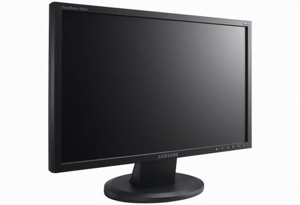

OUTPUT

Output is the result of a computer process. Outputt may be viewed on a monitor screen, heard through speakers,
printed on printers, and so forth. Output devices may be considered hardware and are also considered as
peripheral devices.
(Home)
(Top)